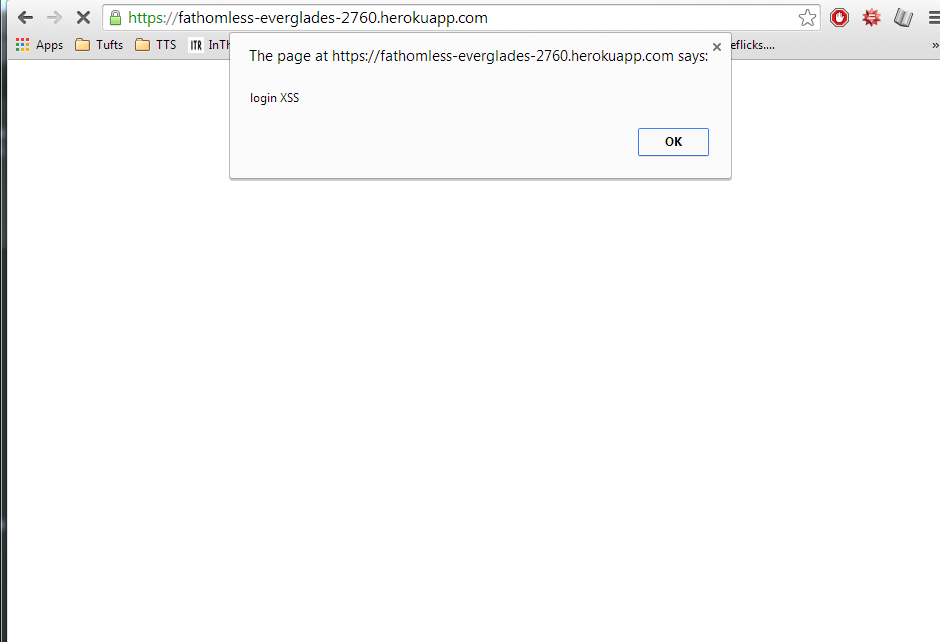

by: Andre C. Newland 4/23/15
This report seeks to assess how secure the Server developed by Thomas Colgrove for Comp20 Assignment 3. The goal was to determine whether or not this application is safe for public use. Colgrove aimed to develop a server-side web application using Heroku, Node.js, and the Express web framework. This application would collect data from users and read and write data to a MongoDB database.
Testing done on this applicattion consisted of "black box" using POSTMAN in order to POST data to the server. Once the source code was received it was combed through for any other potential security gaps.
Provide an overview of all the security and privacy issues you identified. This section should be written for non-technical managers who do not have technical expertise and do not have time to read the entire document. Write this section using lay langauge.
Upon tampering with the application I found that there were three areas in which data could be manipulated in order to apply malicious cross site scripting ** || I found that there were several areas were malicious users could have done damage
Not surprisngly many of the security issues arose from trusting in user input
Cross Site Scripting
 A while loop was also sent to the server causing it to time out.
In the future Colgrove should implement the santiation of user data (which he was obviously aware of). In attacking this server it became increasing apprent how dangerous cross site scripting could be and why it is essential for server programmers to secure data.